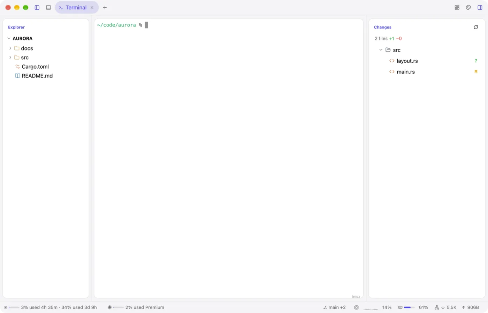
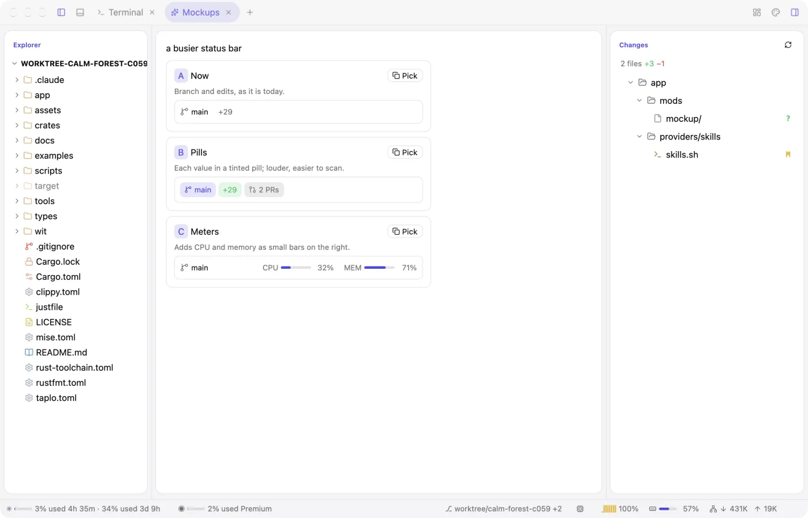
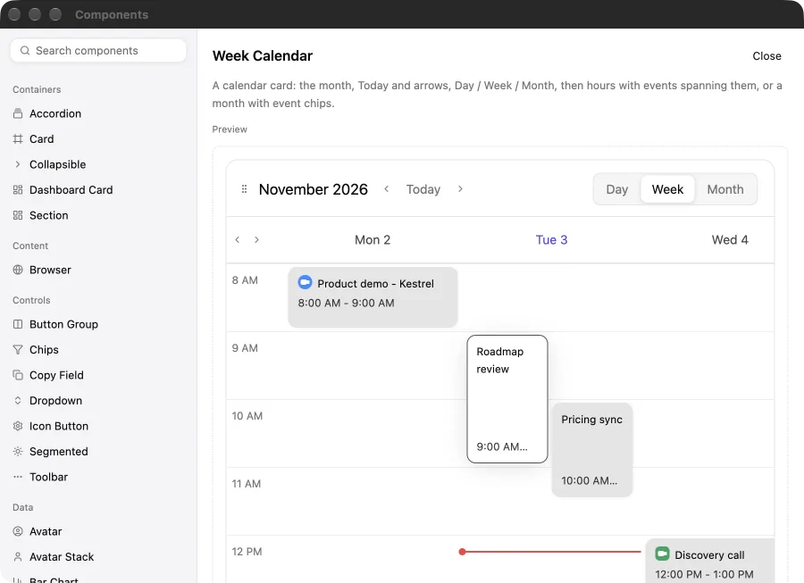
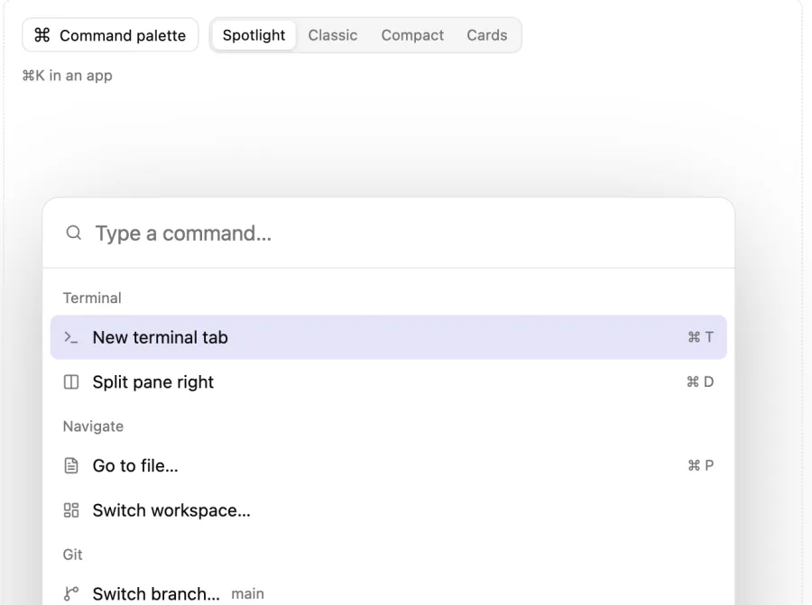
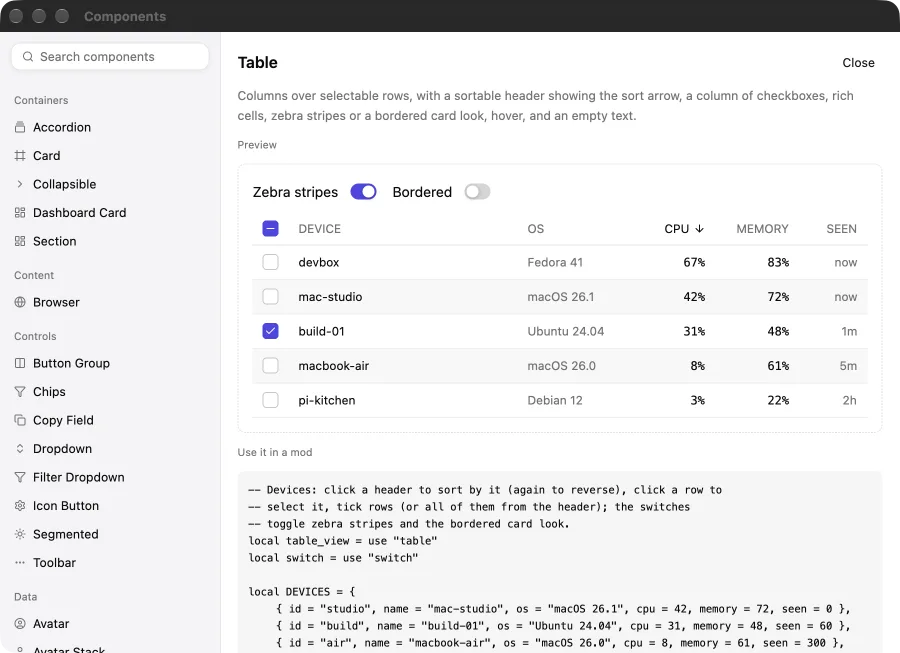
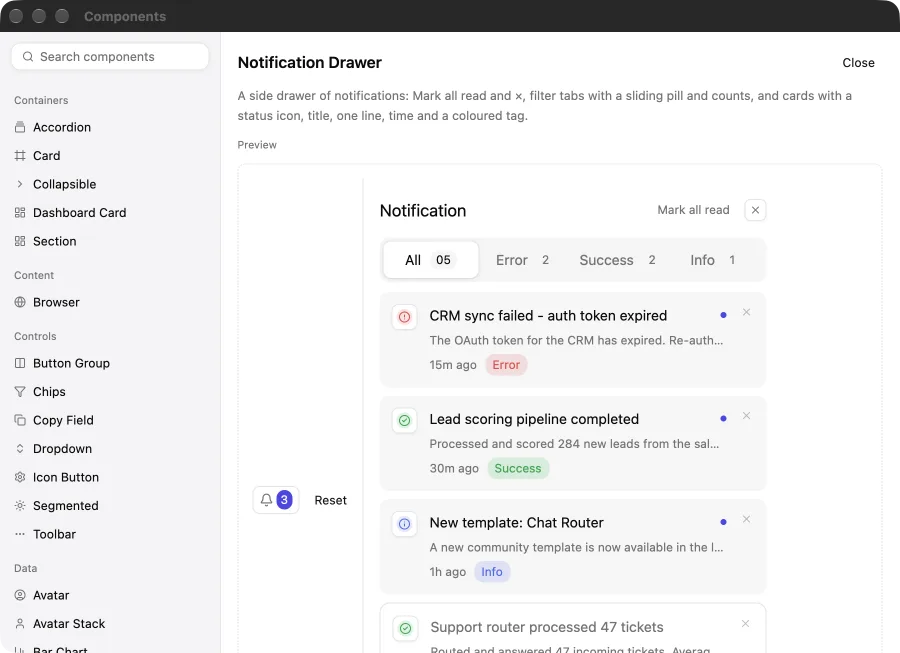

A Rust starter for native desktop apps
Ask for it.
Watch the window change.
Moonframe is a native app in Rust, drawn on the GPU by GPUI. Its panels, toolbars and status bar are Luau files on top, so an agent can change them while the app runs. No rebuild, no restart, and your terminals keep running.
running 214 tests
test result: ok. 214 passed
❯ tail -f server.log
GET /health 200 1ms
Fig. 1 An illustration of the loop. The code the agent writes follows the real status bar mods in app/mods/.
How you work
Describe it, and see it while it's being built.
Run it once
Clone the starter and open the window. You won't need to close it again.
git clone https://github.com/penso/moonframe cd moonframe && mise install just run
Prompt, and watch
Ask your agent for a panel, a widget, a whole screen. Each file it saves redraws the window in place, with state and terminals kept. A mistake shows as a small warning mark, never a blank window.
› a CPU sparkline in the status bar › move changes to the left › a warmer dark theme
Ship it
Build a .app, a Linux prefix or a Windows zip, signed and attested.
just bundle just install # into /Applications
Inspect anything
Point at it. Ask for a change.
Inspect Element picks any part of the window, like a browser's developer tools, and tells your agent which file and line drew it.
- Inspect. ⌥⌘I, then click. The selection is saved where the agent reads it.
- Ask. "Add a list of branches here." The bundled skill tells it where that belongs.
- Check.
just checkandjust typescatch mistakes first. - Watch. The window redraws in place, sandboxed throughout.

ui.list fed by the git provider to the explorer. ✓ just check passed
Mockups
See it before it's made.
Ask for "three takes on the status bar" and they're drawn live, side by side, in a tab of your window. Pick one; nothing real changes until then.
Components
A whole catalogue, ready to use.
Calendars, tables, command palettes, charts, chat, diffs, kanban columns and more. Browse them in the app's Components window with a live preview, the Luau to paste, and Copy for agent.
Fig. 2 The Components window, here in the page: click any of the 142. Names, descriptions, props and code come from app/components; the ones marked with a dot have a preview here, and the app shows them all live.

Week calendar. Day, week and month, with events.

Command palette. Spotlight, classic, compact or cards.

Table. Sortable, filterable, paged.

Notification drawer. Behind a bell, with a badge.
The plates
Every one of these runs on the same engine.
Whole apps install beside the starter as profiles, each with its own shell, mods, menus, icon and theme, and bundle into a standalone release.
What you get
Rust underneath, nothing hidden on top.
Rust and GPUI
A native window drawn on the GPU. Rust checks every element tree Luau returns and owns everything that touches the machine.
Laid out in Luau
A shell places regions and mods fill them. Each mod is one file with its own state, init, update and view, like an Elm program.
A stylesheet
Colors, corners, shadows, spacing, fonts and animations, by type and class, with hover states and transitions.
Themes
Bundled color schemes reach the window, its controls and the terminals.
Terminals
Your login shell on alacritty_terminal or Ghostty's libghostty-vt.
Providers
Sandboxed WebAssembly or plain processes publish JSON that views read as app.<name>.
A sandbox
Luau has no files, network or processes; a memory cap and an instruction budget.
Your folder over the app
~/.config/moonframe holds your own mods and stylesheet; updates never touch it.
A library
Or skip the starter and host Moonframe in your own Rust app.
“Clone it, rename it, and build anything, by hand or by asking an agent while the app runs.”